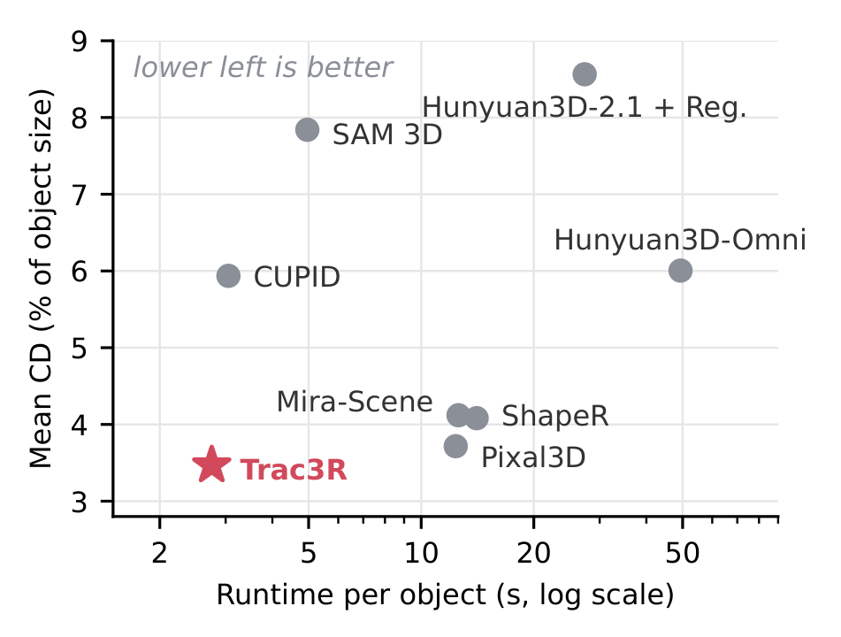
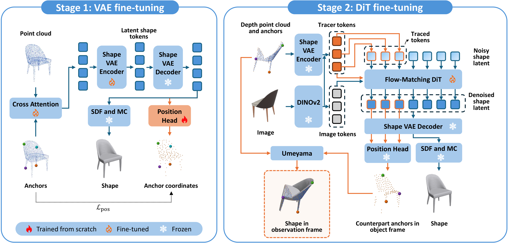

From one image and its depth, Trac3R generates the complete shape of every object and places it at its pose, by tracing observed points through the generation.
Interactive results
Choose a case, then drag to rotate. The four views move together.
(% of object size)
CD: Chamfer distance between the posed prediction and the ground truth, mean over the objects of the case; lower is better. s / object: seconds per object on one RTX PRO 6000 GPU, for shape and pose; for scenes, each method's fastest available scene mode. Meshes are simplified for the web. Click a view first to zoom with the wheel; on a touch screen, use two fingers.
Accurate and fast

On synthetic objects, Trac3R has both high accuracy and the lowest runtime of the compared methods. Its accuracy changes little when predicted depth replaces ground-truth depth.
The same single model also handles real household objects with predicted depth, cluttered tabletops and bins with sensor depth, and indoor and outdoor scenes.
Vertical axis: Chamfer distance (CD) of the posed shape in % of the object's longest side, averaged over Toys4K, GSO and OmniObject3D with ground-truth and MoGe-2 depth. Horizontal axis: seconds per object at batch size 1.
How it works
Trac3R finds correspondences by generating the shape itself. Points of the observation are traced through the generation to where they belong on the complete shape. There is no matching module, no pose loss and no correspondence loss.
Tokens that know their position
A shape is a set of latent tokens, and each token originates from one point on the surface. We fine-tune the shape VAE so that a small position head can read that point back from the token.
Tracing observed points
We encode sampled points of the observation into tokens of the same latent space: the tracers. Each tracer is added to one noisy shape token throughout denoising. That shape token is now a traced token: it is generated to stand for the tracer's point on the complete shape.
Pose from the traced tokens
The position head reads a point on the generated shape from each traced token, which pairs with the observed point of its tracer. The pose is solved with a least-squares fit to these pairs, in closed form.

BibTeX
@article{zhu2026trac3r,
title = {Trac3R: Pose-Grounded 3D Object Generative Reconstruction via Point Tracing},
author = {Zhu, Minghan and Posa, Michael},
journal = {arXiv preprint},
year = {2026}
}